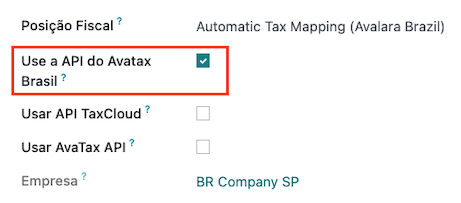
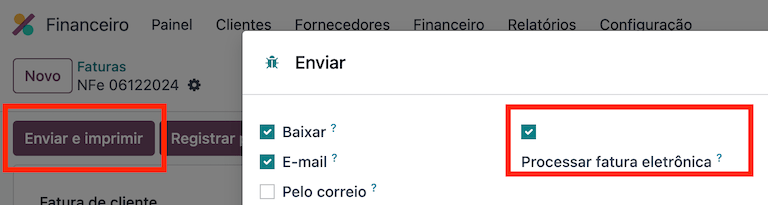
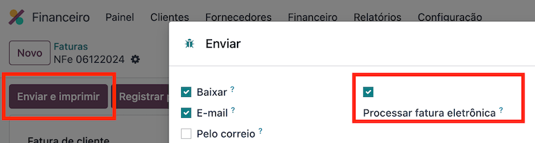

บราซิล¶
บทนำ¶
ด้วยการแปลภาษาของบราซิลภาษีการขายสามารถคำนวณได้โดยอัตโนมัติสามารถส่งใบแจ้งหนี้อิเล็กทรอนิกส์สำหรับสินค้า (NF-e) และบริการ (NFS-e)เรียกใช้ AvaTax (Avalara) ผ่าน #API #. นอกจากนี้ภาษีบริการยังสามารถการกำหนดค่า
ส่วนการคำนวณภาษีสินค้าและบริการ และกระบวนการออกใบแจ้งหนี้อิเล็กทรอนิกส์นั้นคุณต้องกำหนดค่า: อ้าง: ติดต่อ <brazil / ติดต่อ> `,: อ้าง: บริษัท<brazil / company>:ref:`products<brazil / products>และ:ref: สร้างบัญชีใน AvaTax <brazil / บัญชี AvaTax> `ซึ่งต้องกำหนดค่าในการตั้งค่าทั่วไป
สำหรับภาษีบริการ คุณสามารถสร้างและกำหนดค่าได้โดยตรงจาก Odooไม่จำเป็นต้องใช้ AvaTax ในการคำนวณ
ภาษาท้องถิ่นยังรวมถึงแม่แบบตารางภาษีและบัญชีหากจำเป็นก็สามารถปรับเปลี่ยนได้
การกำหนดค่า¶
การติดตั้งโมดูล¶
:ref:` ติดตั้ง <general / Install>` โมดูลต่อไปนี้เพื่อรับทั้งหมดคุณสมบัติของการแปลในบราซิล:
ชื่อ-นามสกุล |
ชื่อทางเทคนิค |
คำแนะนำ |
|---|---|---|
:guilabel:` บราซิล - บัญชี ` |
|
ค่าเริ่มต้น: อ้าง:` แพคเกจการแปลทางการคลัง <การแปลทางการคลัง / แพ็คเกจ> `,ซึ่งระบุว่ามีแผนภูมิการบัญชีและภาษีของบราซิลทั่วไปและประเภทเอกสารและประเภทอัตลักษณ์ |
:guilabel:` บราซิล - รายงานบัญชี ` |
|
รายงานทางบัญชีของบราซิล |
: guilabel: "บราซิล AvaTax" & : guilabel: "บราซิล AvaTax บริการ" |
บริการ l10n_br_avatax และ l10n_br-avatax |
การคำนวณภาษีสินค้าและบริการผ่าน Avalara |
:guilabel:"การแลกเปลี่ยนข้อมูลอิเล็กทรอนิกส์ของบัญชีบราซิล"บริการ` |
บริการ l10n_br_edi และ l10n_br_edi |
ใบแจ้งหนี้อิเล็กทรอนิกส์สำหรับสินค้าและบริการในบราซิลโดยAvaTax。 |
บราซิล Pix QR Code |
|
ใช้ Pix QR Code สำหรับบราซิล |
กำหนดค่าบริษัทของคุณ¶
ในการกำหนดค่าข้อมูล บริษัท ของคุณโปรดไปที่: menuse ส่วน: `ติดต่อ 'สมัครและค้นหาชื่อบริษัทของคุณ
เลือกด้านบนของหน้า: guilabel: ตัวเลือก "บริษัท" จากนั้นกำหนดค่าฟิลด์ต่อไปนี้:
:guilabel:`ชื่อจริง
: guilabel:` ที่อยู่ ': บวก: guilabel:` เมือง ',: guilabel:` รัฐ ',: gilabel:` Zipรหัส
,: guilabel: `ประเทศใน: guilabel: "ถนน" ฟิลด์ป้อนชื่อถนนหมายเลขและใด ๆข้อมูลที่อยู่เพิ่มเติม
ใน: guilabel: "ถนน 2" ฟิลด์, ป้อนเพื่อนบ้าน.
:: guilabel: "Logo Number":: guilabel: "CNPJ" หรือ: guilabel: "CPF"
: guilabel: "เลขประจำตัวผู้เสียภาษี": เกี่ยวข้องกับประเภทของบัตรประจำตัว
: guilabel: "IE": ลงทะเบียนระดับประเทศ
IM:ลงทะเบียนในเขตเทศบาล
: guilabel: "รหัส SUFRAMA": หน่วยงานกำกับดูแลเขตการค้าเสรีมาเนาส์ -หากมีผลบังคับใช้ให้เพิ่ม
โทรศัพท์
อีเมล์: guilabel

ใน: guilabel:` ขายและแท็บซื้อ:
เพิ่มต่อไปนี้: guilabel: "สถานะทางการเงิน": อ้าง: "AvaTax Brazil <บราซิล / การคลัง -ตำแหน่ง>`
: guilabel: "ระบบภาษี": ระบบภาษีของรัฐบาลกลาง
: guilabel: "ประเภทผู้เสียภาษี ICMS": says: guilabel: "ระบบ ICMS",: guilabel: "สถานะปลอดภาษี" หรือ: guilabel: "ไม่ใช่ผู้เสียภาษี"
:guilabel:` แผนกกิจกรรมหลัก

กำหนดค่าพารามิเตอร์เพิ่มเติมต่อไปนี้: guilabel: "ข้อมูลทางการเงิน"NFS-e เร็ว ๆ นี้:
เพิ่มต่อไปนี้: guilabel: "สถานะทางการเงิน": อ้าง: "AvaTax Brazil <บราซิล / การคลัง -ตำแหน่ง>`
:: guilabel:` รายละเอียดกาแฟ':: guilabel:` ต้องเสียภาษี ไม่เสียภาษีอัตราภาษี 0%, ยกเว้น, ระงับชั่วคราว
: guilabel: "รายละเอียด PIS": guilabel: "ต้องเสียภาษี, ไม่ต้องเสียภาษี, ต้องเสียภาษีในอัตรา0%, ยกเว้น, หยุดชั่วคราว
: guilabel: "CSLL ต้องเสียภาษี" หาก บริษัท อยู่ภายใต้ CSLL หรือไม่

สุดท้ายอัปโหลดโลโก้ของ บริษัท และบันทึกรายชื่อของคุณ
Note
หากคุณเป็นระบบที่ง่ายคุณต้องกำหนดค่าอัตรา ICMS ภายใต้เงื่อนไขต่อไปนี้:menusesection:` การบัญชี -> การกำหนดค่า -> การตั้งค่า -> ภาษี ->AvaTax บราซิล".
การกำหนดค่าการรวม AvaTax¶
Avalara AvaTax เป็นผู้ให้บริการการคำนวณภาษีและใบแจ้งหนี้อิเล็กทรอนิกส์สามารถรวมเข้ากับ Odoo เพื่อคำนวณภาษีโดยอัตโนมัติโดยพิจารณาจากรายละเอียด บริษัท การติดต่อ (ลูกค้า) ผลิตภัณฑ์และธุรกรรมดึงข้อมูลภาษีที่ถูกต้องเพื่อนำไปใช้และประมวลผลใบแจ้งหนี้อิเล็กทรอนิกส์ตามมาด้วยรัฐบาล
ต้องใช้การรวมนี้: doc:` ซื้อในแอป (IAP)<../../ essentials/in_app_purchase>` คำนวณภาษีและส่งใบแจ้งหนี้อิเล็กทรอนิกส์ ส่งเอกสารอิเล็กทรอนิกส์เมื่อใดก็ตามที่มีการคำนวณภาษี(NF-e, NFS-e, ฯลฯ ) หรือดำเนินการใด ๆ ของกระบวนการทางอิเล็กทรอนิกส์ (NF-E - ยกเลิก,แก้ไขจดหมายทำให้ช่วงของหมายเลขใบแจ้งหนี้เป็นโมฆะ), การเรียกใช้ APIใช้คะแนนจากยอดคงเหลือของคะแนน IAP ของคุณ < https://iap.odoo.com/iap/in-สมัครบริการ / 819
Note
Odoo เป็นพันธมิตรที่ได้รับการรับรองของ Avala Brazil
คุณสามารถซื้อเครดิต IAP ที่ odoo.com << https://iap.odoo.com/iap/in-app-บริการ / 819
On creation, new databases receive 500 free credits.
การกำหนดค่าคูปอง¶
เพื่อเปิดใช้งาน AvaTax ใน Odoo คุณต้องสร้างบัญชี เพื่อการนี้เยี่ยมชม: menusesection:` การบัญชี -> การกำหนดค่า -> การตั้งค่า -> ภาษี และใน: guilabel: "AvaTax Brazil" ส่วน, เพิ่มที่อยู่อีเมลการจัดการใช้สำหรับ: AvaTax Portal ใน guilabel: "AvaTax Portal Email",จากนั้นคลิกที่: guilabel: "สร้างบัญชี".
Warning
** การทดสอบ ** หรือ ** เมื่อสร้างการผลิต **: guilabel: `AvaTax Portalบูรณาการอีเมลในแซนด์บ็อกซ์หรือฐานข้อมูลการผลิตโดยใช้อีเมลจริงที่อยู่เนื่องจากต้องลงชื่อเข้าใช้พอร์ทัล Avalara และตั้งค่าใบรับรองไม่ว่าคุณจะต้องการทดสอบหรือใช้ในการผลิต
มีสองพอร์ทัล Avalara ที่แตกต่างกันหนึ่งสำหรับการทดสอบและอื่น ๆ สำหรับการผลิต:
แซนด์บ็อกซ์: https://portal.sandbox.avalarabrasil.com.br/
การผลิต: https://portal.avalarabrasil.com.br/
เมื่อคุณสร้างบัญชีจาก Odoo อย่าลืมเลือกบัญชีที่ถูกต้องสิ่งแวดล้อม นอกจากนี้ อีเมลที่ใช้ในการเปิดบัญชีไม่สามารถใช้งานได้เปิดบัญชีใหม่ บันทึกของคุณ: guilabell: API ID และ: guilabell: `API Key`เมื่อคุณสร้างบัญชีจาก Odoo

หลังจากสร้างบัญชีจาก Odoo คุณต้องไปที่พอร์ทัล Avalaraตั้งรหัสผ่าน:
เยี่ยมชม `Avalara Portal https://portal.avalarabrasil.com.br/Login >`_.
ฮิต: guilabel: "Meu primeiro acesso".
เพิ่มที่อยู่อีเมลที่คุณใช้เมื่อสร้างบัญชี Avalara / AvaTax ใน Odooแล้วคลิก: guilabel: "ทนายเสนาะ"
คุณจะได้รับอีเมลที่มีโทเค็นและลิงก์สำหรับการสร้างรหัสผ่านคลิกที่ลิงค์นี้และคัดลอกและวางโทเค็นเพื่อกำหนดสิ่งที่คุณต้องการรหัสผ่าน
Tip
คุณสามารถเริ่มใช้ AvaTax ในการคำนวณภาษีใน Odoo **, ** ไม่จำเป็นสร้างรหัสผ่านและเข้าถึงพอร์ทัล Avalara ในฐานข้อมูล Odooอย่างไรก็ตามในการใช้บริการ e-Invoice คุณ **ต้อง ** เข้าถึงเข้าถึงพอร์ทัล AvaTax และอัปโหลดใบรับรองของคุณที่นั่น
Note
คุณสามารถถ่ายโอน › API› ข้อมูลประจำตัว. เฉพาะเมื่อคุณมีอยู่แล้วสร้างบัญชีในอินสแตนซ์อื่นของ Odoo และต้องการนำกลับมาใช้ใหม่
อัปโหลดใบรับรอง A1¶
เพื่อออกใบแจ้งหนี้อิเล็กทรอนิกส์ ใบรับรองจะต้องอัปโหลดไปยังAvaTax พอร์ทัล https://portal.avalarabrasil.com.br/Login >`_.
ใบรับรองจะถูกซิงค์กับ Odoo ตราบเท่าที่ภายนอกการจับคู่หมายเลขตัวระบุในพอร์ทัล AvaTax - ไม่มีอักขระพิเศษ- ตรงกับหมายเลข CNPJ และหมายเลขประจำตัว (CNPJ) ใน Odooทำงานร่วมกับ CNPJ ที่ AvaTax
Important
ในการออก NFS-e บางเมืองต้องการให้คุณเชื่อมโยงใบรับรองกับระบบ City Gateway ก่อนที่ Odoo จะเปิดตัว NFS-e
หากคุณได้รับข้อความผิดพลาดจากเมืองที่เขียนว่า: guilabel: "ของคุณใบรับรองไม่ได้เชื่อมโยงกับผู้ใช้ซึ่งหมายความว่ากระบวนการนี้ต้องทำเสร็จในเว็บพอร์ทัลของเมือง
กำหนดค่าข้อมูลหลัก¶
รายการบัญชี¶
:doc:`ตารางบัญชี</ การบัญชี / การเริ่มต้น / แผนภูมิบัญชี > `โดยค่าเริ่มต้นติดตั้งเป็นส่วนหนึ่งของชุดข้อมูลที่รวมอยู่ในการแปลโมดูล บัญชีเหล่านี้จะถูกโยงไปยังภาษีที่เกี่ยวข้องโดยอัตโนมัติและช่องบัญชีลูกหนี้และลูกหนี้โดยปริยาย
Note
ตารางบัญชีในบราซิลขึ้นอยู่กับ SPED CoA ซึ่งให้พื้นฐานของบัญชีที่ต้องการในบราซิล
คุณสามารถเพิ่มหรือลบบัญชีได้ตามความต้องการของบริษัท
การขายวารสาร¶
ในบราซิล * หมายเลขซีรี่ส์ * เกี่ยวข้องกับช่วงหมายเลขซีเรียลใบแจ้งหนี้อิเล็กทรอนิกส์ สามารถกำหนดค่าหมายเลขซีเรียลได้ใน Odoo ที่ขายวารสารจาก: guilabel: "ชุด" สนาม. หากมีหลายชุดจำเป็นต้องสร้างบันทึกการขายใหม่และคอลเลกชันใหม่หากต้องการหมายเลขที่กำหนดสำหรับแต่ละชุดที่ต้องการ
ต้องการเลือก: guilabel: ฟิลด์ "ใช้เอกสาร" เมื่อมีการเผยแพร่ใบแจ้งหนี้อิเล็กทรอนิกส์และไม่ใช่อิเล็กทรอนิกส์เลือก: guilabel: ฟิลด์ "ประเภท"ประเภทของเอกสารที่ใช้ในการสร้างใบแจ้งหนี้ : guilabel: ฟิลด์ "ประเภท"จะแสดงเฉพาะเมื่อเลือก: guilabel: ฟิลด์ "ใช้เอกสาร"ในนิตยสาร

Note
เมื่อสร้างไดอารี่ตรวจสอบให้แน่ใจว่าฟิลด์: guilabel: `ตั๋วเครดิตพิเศษลำดับ "ไม่ได้ตรวจสอบเช่นบราซิล, ลำดับระหว่างใบแจ้งหนี้, L / Cหมายเหตุและบันทึกเดบิตจะถูกแชร์ตามหมายเลขซีเรียล ได้แก่ กดไดอารี่
ภาษี¶
ภาษีจะถูกสร้างขึ้นโดยอัตโนมัติเมื่อติดตั้ง Localization ของบราซิลภาษีมีการกำหนดค่าและบางส่วนถูกใช้โดย Avalara ในกรณีคำนวณภาษีในใบสั่งขายหรือใบแจ้งหนี้
สามารถแก้ไขภาษีหรือเพิ่มภาษีได้ ตัวอย่างเช่น ภาษีบางส่วนค่าใช้จ่ายที่ใช้ในการให้บริการจะต้องเพิ่มและกำหนดค่าด้วยตนเองเนื่องจากอัตราค่าบริการอาจแตกต่างกันไปตามเมืองที่ให้บริการ
Important
หากคุณตัดสินใจที่จะชำระภาษีบริการด้วยตนเองคุณจะไม่สามารถออกให้NFS-e ในการส่ง NFS-e ทางอิเล็กทรอนิกส์คุณต้องคำนวณภาษีโดยใช้สูตรต่อไปนี้อวาลา
Warning
อย่าเอาภาษีออกเพราะใช้ในการคำนวณภาษี AvaTax หากเมื่อลบแล้ว Odoo จะสร้างใหม่อีกครั้งเมื่อใช้ใน #SO หรือใบแจ้งหนี้การคำนวณภาษีโดยใช้ AvaTax แต่บัญชีที่ใช้ในการลงทะเบียนภาษีจะต้องกำหนดค่าใหม่ในแท็บ: guilabel: คำจำกัดความ: guilabel: `การแจกจ่ายใบแจ้งหนี้' และ: guilabel: `การแจกจ่ายใบแจ้งหนี้ส่วนการคืนเงิน
See also
:doc:`เอกสารเกี่ยวกับภาษี</ บัญชี / ภาษี > `
ผลิตภัณฑ์¶
หากต้องการใช้การรวม AvaTax ในใบสั่งขายและใบแจ้งหนี้ให้ระบุก่อนขึ้นอยู่กับวัตถุประสงค์ของผลิตภัณฑ์ให้ข้อมูลต่อไปนี้:
ใบแจ้งหนี้สินค้าอิเล็กทรอนิกส์ (NF-E)¶
: guilabel: "รหัส CEST": รหัสสำหรับผลิตภัณฑ์ทดแทนภาษี ICMS
: guilabel: "รหัส Mercosur NCM": รหัสสินค้า Mercosur ชื่อสามัญ
: guilabel: "สถานที่กำเนิด": บ่งบอกถึงที่มาของผลิตภัณฑ์สามารถอาจเป็นต่างประเทศหรือในประเทศและตัวเลือกอื่น ๆ ที่เป็นไปได้ขึ้นอยู่กับกรณีการใช้งานเฉพาะ
: guilabel: "ประเภทผลิตภัณฑ์ทางการเงิน SPED": ประเภทของผลิตภัณฑ์ทางการเงินตาม SPEDตารางรายการ
:guilabel:` วัตถุประสงค์ในการใช้งาน': ระบุวัตถุประสงค์ในการใช้งานผลิตภัณฑ์
Note
Odoo สร้างผลิตภัณฑ์ 3 รายการสำหรับการขนส่งโดยอัตโนมัติต้นทุนที่เกี่ยวข้องกับการขาย เหล่านี้เรียกว่า "ค่าขนส่ง", "ประกัน" และค่าใช้จ่ายอื่นๆ" หากจำเป็นต้องสร้างเพิ่มเติมคัดลอกและใช้การกำหนดค่าเดียวกัน (การกำหนดค่าที่จำเป็น::guilabel:` ประเภทสินค้า` บริการ',: guilabel:` ประเภทค่าขนส่ง`ประกันค่าจัดส่งหรือค่าใช้จ่ายอื่น ๆ )
บริการ e-Invoice (NFS-E)¶
: guilabel: "รหัส Mercosur NCM": รหัสสินค้า Mercosur ชื่อสามัญ
:guilabel:` วัตถุประสงค์ในการใช้งาน': ระบุวัตถุประสงค์ในการใช้งานผลิตภัณฑ์
: guilabel: "แหล่งที่มาของรหัสบริการ": รหัสบริการเมืองที่ผู้ให้บริการอยู่ลงทะเบียนแล้ว
: guilabel: "รหัสบริการ": รหัสบริการเมืองที่ให้บริการหากไม่มีการเพิ่มรหัสจะใช้รหัสเมืองต้นทาง
: guilabel: "การจัดส่งแรงงาน": กำหนดว่าบริการของคุณรวมถึงแรงงานหรือไม่
ติดต่อ¶
ก่อนที่จะใช้การบูรณาการโปรดระบุข้อมูลต่อไปนี้ผู้ติดต่อ:
ข้อมูลทั่วไปสำหรับติดต่อ:
เลือกสำหรับผู้ติดต่อที่มีหมายเลขประจำตัวผู้เสียภาษี (CNPJ): guilabel: ตัวเลือก "บริษัท" หรือcheck: guilabel: "บุคคลธรรมดา" ที่เชื่อมโยงกับซีพีเอฟ
:guilabel:`ชื่อจริง
: guilabel:` ที่อยู่ ': บวก: guilabel:` เมือง ',: guilabel:` รัฐ ',: gilabel:` Zipรหัส
,: guilabel: `ประเทศใน: guilabel: "ถนน" ฟิลด์ป้อนถนนหมายเลขและข้อมูลเพิ่มเติมใด ๆข้อมูลที่อยู่
ใน: guilabel: "ถนน 2" ฟิลด์, ป้อนเพื่อนบ้าน.
:: guilabel: "Logo Number":: guilabel: "CNPJ" หรือ: guilabel: "CPF"
: guilabel: "เลขประจำตัวผู้เสียภาษี": เกี่ยวข้องกับประเภทของบัตรประจำตัว
: guilabel: 'IE': หมายเลขประจำตัวผู้เสียภาษี
: guilabel: 'IM': หมายเลขประจำตัวผู้เสียภาษีเทศบาล
รหัส SUFRAMA:หมายเลขทะเบียน SUFRAMA
โทรศัพท์
อีเมล์: guilabel
Note
The CPF, IE, IM, and SUFRAMA code fields are are hidden until the Country is set to
Brazil.ข้อมูลทางการเงินเกี่ยวกับผู้ติดต่อ: guilabel: `sales&แท็บซื้อ:
: guilabel: "สถานะทางการเงิน": เพิ่มสถานะทางการเงินของ AvaTax โดยอัตโนมัติคำนวณภาษีสำหรับใบสั่งขายและใบแจ้งหนี้อัตโนมัติ
: guilabel: "ระบบภาษี": ระบบภาษีของรัฐบาลกลาง
ICMS ประเภทผู้เสียภาษี:ประเภทผู้เสียภาษีกำหนดว่าผู้ติดต่อคือใน: guilabel: "ระบบ ICMS",: guilabel: "สถานะการยกเว้น" หรือ:guilabel:
ผู้ที่ไม่เสียภาษี:: guilabel: "แผนกกิจกรรมหลัก":ติดต่อ
กำหนดค่าพารามิเตอร์เพิ่มเติมต่อไปนี้: guilabel: "ข้อมูลทางการเงิน"NFS-e เร็ว ๆ นี้:
เพิ่มต่อไปนี้: guilabel: "สถานะทางการเงิน": อ้าง: "AvaTax Brazil <บราซิล / การคลัง -ตำแหน่ง>`
:: guilabel:` รายละเอียดกาแฟ':: guilabel:` ต้องเสียภาษี ไม่เสียภาษีอัตราภาษี 0%, ยกเว้น, ระงับชั่วคราว
:: guilabel:` รายละเอียด PIS':: guilabel:` ต้องเสียภาษี ไม่ต้องเสียภาษี ต้องเสียภาษี0%, ยกเว้น, หยุดชั่วคราว
: guilabel: "CSLL ที่ต้องเสียภาษี": บริษัท อยู่ภายใต้ CSLL หรือไม่
ฐานะทางการเงิน¶
ในการคำนวณภาษีและส่งใบแจ้งหนี้อิเล็กทรอนิกส์บนใบสั่งขายและใบแจ้งหนี้:guilabell:` การตรวจจับอัตโนมัติ ' และ: guilabell:` การใช้ AvaTax API`จำเป็นต้องเปิดใช้งานตัวเลือกใน: guilabel: "สถานะทางการเงิน"
สามารถกำหนดค่าได้ที่: อ้าง:` ติดต่อ: guilabel:` สถานะทางการเงิน '<brazil/contacts>` หรือเลือกเมื่อสร้างใบสั่งขายหรือใบแจ้งหนี้
กระบวนการทำงาน¶
ส่วนนี้ระบุถึงการดำเนินการที่เรียกใช้ API< https://en.wikipedia.org/wiki/API >`_ สำหรับการคำนวณภาษีและคำแนะนำในการส่งใบแจ้งหนี้อิเล็กทรอนิกส์สำหรับสินค้า (NF-e)บริการตรวจสอบความถูกต้องของรัฐบาล (NFS-e)
Warning
โปรดทราบว่าแต่ละ #API#Call จะมีค่าใช้จ่าย ให้ความสนใจกับการกระทำสิ่งนี้ทําให้เกิดการเรียกร้องให้มีการบริหารต้นทุนอย่างมีประสิทธิภาพ
การคำนวณภาษี¶
การคำนวณภาษีของใบเสนอราคาและใบสั่งขาย¶
ทริกเกอร์ #API #โทรไปคำนวณภาษีสำหรับใบเสนอราคาหรือใบสั่งขายใช้ AvaTax โดยอัตโนมัติด้วยวิธีใดวิธีหนึ่งต่อไปนี้:
- ** ยืนยันใบเสนอราคา **
ยืนยันข้อเสนอในใบสั่งขาย
- ** ทริกเกอร์มือ **
ฮิต: guilabel: "การคำนวณภาษีกับ AvaTax".
- ตัวอย่าง
คลิกที่: guilabel: "ตัวอย่าง" ปุ่ม
- ** ส่งใบเสนอราคา / ใบสั่งขายทางอีเมล์ **
ส่งใบเสนอราคาหรือใบสั่งขายให้กับลูกค้าทางอีเมล
- ** ใบเสนอราคาออนไลน์ **
เมื่อลูกค้าเข้าถึงข้อเสนอออนไลน์ (ผ่านมุมมองพอร์ทัล)เรียกใช้ API เรียกใช้
การคำนวณภาษีตามใบแจ้งหนี้¶
เรียกใช้ › API› เรียกใช้เพื่อคำนวณภาษีและใบแจ้งหนี้ของลูกค้าโดยอัตโนมัติใช้ AvaTax ด้วยวิธีใดวิธีหนึ่งต่อไปนี้:
- ** ทริกเกอร์มือ **
ฮิต: guilabel: "การคำนวณภาษีกับ AvaTax".
- ตัวอย่าง
คลิกที่: guilabel: "ตัวอย่าง" ปุ่ม
- ** การเข้าถึงใบแจ้งหนี้ออนไลน์ **
เมื่อลูกค้าเข้าไปดูใบแจ้งหนี้ออนไลน์ (มองผ่านพอร์ทัล),#APIเสียงเรียกถูกกระตุ้น
Note
: guilabel: "ฐานะทางการเงิน" ต้องตั้งเป็น "แผนที่ภาษีอัตโนมัติ"(Avalara Brazil) "การกระทำใด ๆ เหล่านี้สามารถคำนวณภาษีโดยอัตโนมัติ
See also
:doc:` ฐานะทางการเงิน (แผนที่ภาษีและบัญชี)<../ การบัญชี / ภาษี / ฐานะทางการเงิน > `
เอกสารอิเล็กทรอนิกส์¶
ใบแจ้งหนี้ของลูกค้า¶
เพื่อประมวลผลใบแจ้งหนี้อิเล็กทรอนิกส์สำหรับสินค้า (NF-e) หรือบริการ (NFS-e)ใบแจ้งหนี้ต้องได้รับการยืนยันและภาษีต้องคำนวณโดย Avalara ครั้งเดียวหลังจากเสร็จสิ้นขั้นตอนคลิกที่: guilabel: "ส่งและพิมพ์" ปุ่มมุมบนซ้าย ในหน้าต่างป๊อปอัพที่ปรากฏขึ้นคลิกที่: guilabel:` กระบวนการใบแจ้งหนี้อิเล็กทรอนิกส์" และตัวเลือกอื่น ๆ -: guilabel: "ดาวน์โหลด" หรือ: guilabel: "อีเมล" สุดท้ายคลิกที่: guilabel: "ส่งและพิมพ์" เพื่อประมวลผลเพื่อออกใบแจ้งหนี้ให้รัฐบาล
ก่อนที่จะส่งใบแจ้งหนี้อิเล็กทรอนิกส์สำหรับสินค้า (NF-e) หรือบริการ (NFS-e)บางฟิลด์ต้องกรอกในใบแจ้งหนี้:
: guilabel: "ลูกค้า" พร้อมข้อมูลลูกค้าทั้งหมด
: guilabel: "วิธีการชำระเงิน: บราซิล": วิธีการชำระเงินใบแจ้งหนี้
: guilabel: "ฐานะทางการเงิน" ตั้งค่าเป็น: guilabel: "แผนที่ภาษีอัตโนมัติ"(Avalara, บราซิล)`
: guilabel: "ประเภทเอกสาร" ตั้งค่าเป็น: guilabel: "(55) ใบแจ้งหนี้อิเล็กทรอนิกส์ (NF-e)"หรือ: guilabel:` (SE) ใบแจ้งหนี้บริการอิเล็กทรอนิกส์ (NFS-e)`
มีช่องทางเลือกอื่น ๆ ขึ้นอยู่กับข้อตกลง ฟิลด์เหล่านี้ไม่จำเป็นดังนั้นจึงไม่มีข้อผิดพลาดหากสนามเสริมเหล่านี้ไม่ได้กรอกในกรณีส่วนใหญ่รัฐบาลจะจัดการกับ:
: guilabel: "รูปแบบการขนส่งสินค้า" กำหนดวิธีการวางแผนสำหรับสินค้าการขนส่ง - ในประเทศ
: guilabel: "ขนส่งบราซิล" ตัดสินใจว่าใครเป็นผู้ขนส่ง
 

Note
ฟิลด์ทั้งหมดที่มีอยู่ในใบแจ้งหนี้สำหรับการออกใบแจ้งหนี้อิเล็กทรอนิกส์ใบแจ้งหนี้ยังสามารถพบได้ในใบสั่งขายหากต้องการ เมื่อสร้างใบแจ้งหนี้ครั้งแรกฟิลด์: guilabel: แสดง "หมายเลขไฟล์" ได้รับมอบหมายเป็นเลขแรกที่ใช้ในการออกใบแจ้งหนี้ตามลำดับ
ตั๋วเครดิต¶
คุณสามารถสร้างสลิปเครดิตได้หากต้องการลงทะเบียนเพื่อขายคืนโอโดจะถูกส่งไปให้รัฐบาลตรวจสอบ
Note
Credit Note สามารถใช้ได้กับ Cargo e-Invoice (NF-e) เท่านั้น
See also
:ref:` ใบแจ้งยอดบัญชี/ใบแจ้งยอดบัญชี/ใบแจ้งยอดบัญชี/ใบแจ้งยอดบัญชี/ใบแจ้งยอดบัญชี/ใบแจ้งยอดบัญชี/ใบแจ้งยอดบัญชี/ใบแจ้งยอดบัญชี/ใบแจ้งยอดบัญชี/ใบแจ้งยอดบัญชี/ใบแจ้งยอดบัญชี/ใบแจ้งยอดบัญชี/ใบแจ้งยอดบัญชี>`
ใบแจ้งขอยืม/ใบแจ้งหนี้¶
หากจำเป็นต้องมีข้อมูลเพิ่มเติมหรือต้องมีมูลค่าแก้ไขการกู้ยืมที่ไม่ถูกต้องในใบแจ้งหนี้เดิมสามารถออกธนบัตรได้
Note
บัตรเดบิตสามารถใช้ได้กับใบแจ้งหนี้สินค้าอิเล็กทรอนิกส์ (NF-e) เท่านั้น
เฉพาะผลิตภัณฑ์ที่รวมอยู่ในใบแจ้งหนี้ต้นฉบับเท่านั้นที่สามารถเป็นส่วนหนึ่งของการหักบัญชีระวังหน่อย ขณะที่ราคาต่อหน่วยหรือปริมาณสินค้าสามารถเปลี่ยนแปลงได้สินค้า**ไม่สามารถเพิ่มลงในสลิปเดบิตได้ วัตถุประสงค์ของเอกสารฉบับนี้เพียงระบุจำนวนเงินที่คุณต้องการเพิ่มในใบแจ้งหนี้ต้นฉบับสินค้าเดิมหรือน้อยกว่า
See also
:ref:` ออกใบเดบิต <การบัญชี / ออกใบเดบิต >
การยกเลิกใบแจ้งหนี้¶
สามารถยกเลิกใบแจ้งหนี้อิเล็กทรอนิกส์ที่ตรวจสอบแล้วรัฐบาล
Note
ตรวจสอบว่า e-Invoice ยังอยู่ในข่ายการยกเลิกเส้นตายอาจแตกต่างกันไปขึ้นอยู่กับกฎหมายของรัฐ
ใบแจ้งหนี้อิเล็กทรอนิกส์สำหรับสินค้า (NF-E)¶
คลิก: guilabel:` คำขอยกเลิกใบแจ้งหนี้อิเล็กทรอนิกส์สำหรับสินค้าใน Odoo (NF-e)ยกเลิกและเพิ่มการยกเลิกในหน้าต่างป๊อปอัพ: guilabel: "เหตุผล"โผล่มา หากคุณต้องการส่งเหตุผลการยกเลิกนี้ให้กับลูกค้าด้วยวิธีต่อไปนี้อีเมลเปิดใช้งาน: guilabel: กล่องกาเครื่องหมาย "อีเมล"

Note
นี่คือการยกเลิกทางอิเล็กทรอนิกส์ ซึ่งหมายความว่า Odo จะส่งขอให้รัฐบาลยกเลิก NF-e แล้วมันจะบริโภคหนึ่ง#IAP #เครดิต เพราะเกิดขึ้นแล้ว #API#เรียก
บริการ e-Invoice (NFS-E)¶
ยกเลิกใบแจ้งหนี้อิเล็กทรอนิกส์สำหรับบริการ (NFS-e) ใน Odoo โดยคลิก: guilabel: "ขอยกเลิก" ในกรณีนี้ไม่มีอิเล็กตรอนกระบวนการยกเลิกเพราะไม่ใช่ทุกเมืองจะมีบริการนี้ ผู้ใช้ต้องยกเลิก NFS-e นี้ด้วยตนเองบนพอร์ทัลของเมือง เมื่อขั้นตอนนี้แล้วเมื่อเสร็จสิ้น พวกเขาสามารถขอยกเลิกใน Odoo ซึ่งจะถูกยกเลิกใบแจ้งหนี้
หนังสือแก้ไข¶
สามารถสร้างหนังสือแก้ไขและเชื่อมโยงกับใบแจ้งหนี้อิเล็กทรอนิกส์ได้สินค้าที่ได้รับการรับรองจากรัฐบาล (NF-e)
นี้สามารถทำได้ใน Odoo โดยคลิกที่: guilabel: "จดหมายแก้ไข" และเพิ่มการแก้ไขบนหน้าต่างป๊อปอัพที่ปรากฏขึ้น: guilabel: "Reason" ส่งแจ้งให้ลูกค้าทราบถึงเหตุผลในการแก้ไขนี้ผ่านทางอีเมลเปิดใช้งาน: guilabel: ช่องทำเครื่องหมาย "อีเมล"

Note
หนังสือแก้ไขเฉพาะใบแจ้งหนี้อิเล็กทรอนิกส์สำหรับสินค้า（NF-e）。
ช่วงของหมายเลขใบแจ้งหนี้ไม่ถูกต้อง¶
ลำดับที่กำหนดให้บันทึกการขายอาจไม่ถูกต้องหากไม่ได้ใช้งานในปัจจุบัน,** และ ** จะไม่ใช้อนาคต เมื่อต้องการทำเช่นนี้, ไปที่บันทึกและคลิก:เมนูอาหาร:` ⚙️ (เกียร์) ไอคอน -> ช่วงตัวเลขไม่ถูกต้อง (BR)`. บน:guilabel:` ตัวช่วยสร้างตัวเลขที่ไม่ถูกต้อง (BR) , เพิ่ม: guilabel: ค่าเริ่มต้นNumber`และ: guilabel: "หมายเลขสิ้นสุด" ของช่วงที่ควรยกเลิกและป้อนข้อมูลไม่ถูกต้อง: guilabel: 'สาเหตุ'


Note
เอกสารช่วงหมายเลขใบแจ้งหนี้ที่ไม่ถูกต้องสามารถใช้ได้กับเวอร์ชั่นอิเล็กทรอนิกส์เท่านั้นใบแจ้งหนี้สินค้า (NF-e)
Note
บันทึกของหมายเลขที่ถูกยกเลิกเช่นเดียวกับไฟล์ XML จะถูกบันทึกไว้ในเรื่องซุบซิบของไดอารี่
การเรียกเก็บเงินของผู้ขาย¶
ในแง่ของการเรียกเก็บเงินของซัพพลายเออร์เมื่อได้รับใบแจ้งหนี้จากผู้จัดจำหน่ายคุณสามารถเขียนโค้ดบิลใน Odoo โดยนำข้อมูลธุรกิจทั้งหมดมารวมกันด้วยการบันทึกใน: อ้าง:` ใบแจ้งหนี้ลูกค้า <Brazil / e-File>`
พื้นที่เฉพาะของบราซิลเหล่านี้คือ:
: guilabel: "วิธีการชำระเงิน: บราซิล": วิธีการชำระเงินใบแจ้งหนี้
: guilabel: "ประเภทเอกสาร": ใช้โดยซัพพลายเออร์ของคุณ
: guilabel: "หมายเลขเอกสาร": หมายเลขใบแจ้งหนี้ของผู้ให้บริการ
: guilabel: "รูปแบบการขนส่งสินค้า": ** NF-e เฉพาะ ** วิธีการวางแผนการขนส่งสินค้าการขนส่ง - ในประเทศ
: guilabel: "ขนส่งบราซิล": ** NF-e เฉพาะ ** ใครทำการจราจร